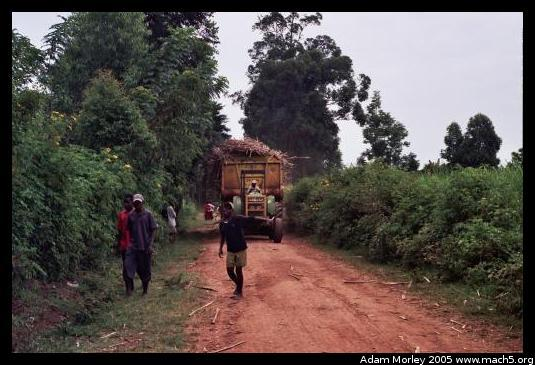
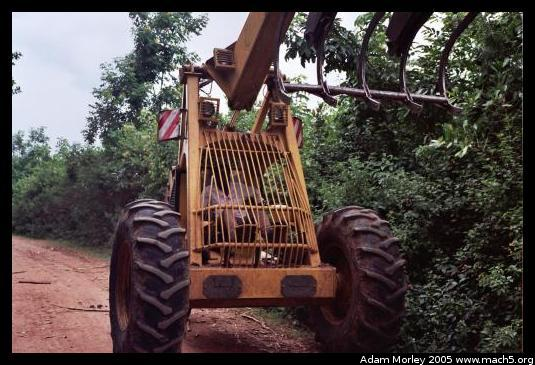
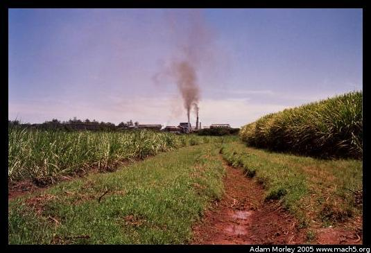
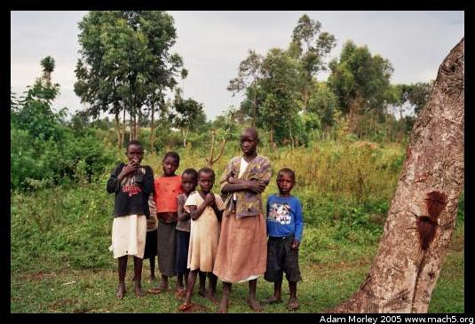
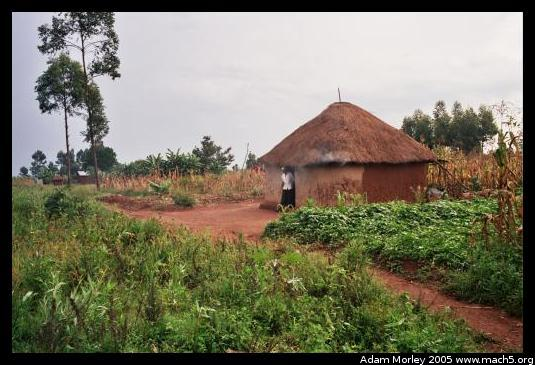
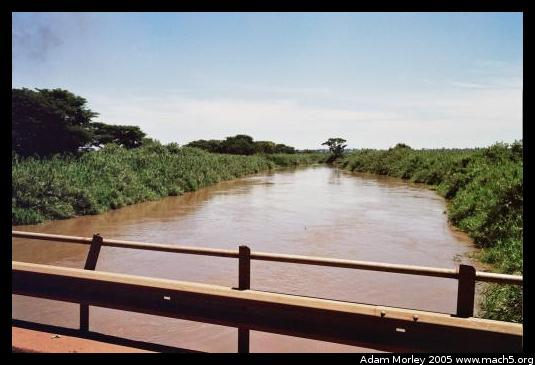
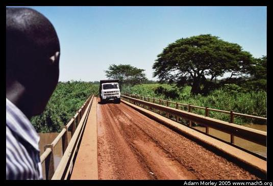
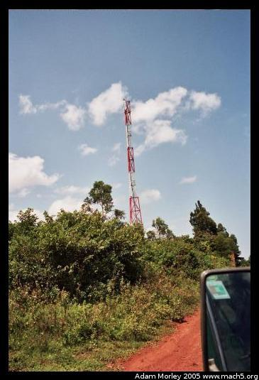
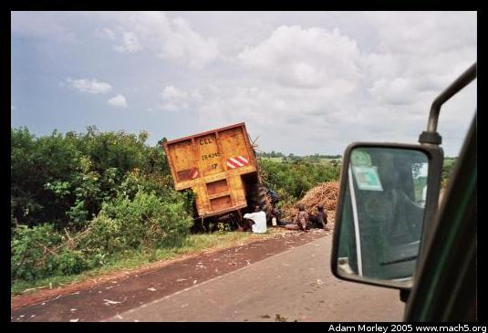
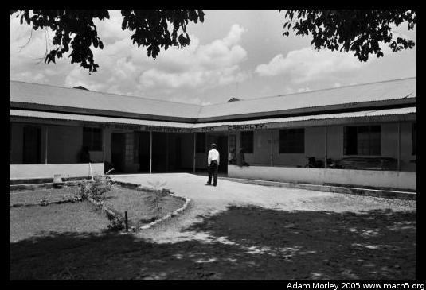

The area around Bungoma is a typical of western Kenyan. Villages and dirt roads feed paved roads which lead to larger towns. It seems that large towns lie no more than twenty-five to thirty kilometers apart in this part of western Kenya. A likely reason for this density is the population density. In times past, most families were farmers who grew the food they needed to live on. As the population has grown over recent years, and the sons are given part of their father's land, average plot size has decreased. This means it is more difficult for many families to grow enough food for their family.
This fact led to a surprising dichotomy, at least from an American standpoint. In the USA, traditional, christian groups often oppose birth control. This was not the case in western Kenya. Families were very interested in birth control and reducing family size. This was viewed as the best way to reduce population pressure on limited land resources.
 A sugar cane trailer headed to Mumias Sugar, along with the machine used to load the sugar cane into the trailer. About two days after I saw a sugar cane trailer, I asked, "How do they get the sugar cane into the trailer?" I was told that a special machine did it. About two weeks later, I finally saw one. It has (as you can see above) a large claw which can grab the cane and lift it into the trailer.
One of Mumias Sugar's refineries, where they process sugar cane into table sugar, mostly for export. However, as I write this (Feb 2006), I see news articles saying sugar prices will soon rise because of lack of supply. You can see sugar cane in the foreground.
Some Kenyan children watching us leave, after we visited some local farmers.
A house between Bungoma and Kabula, near Joseph's house. You can see maize (corn) growing in the background.
One day, we got lost on our way to a program, and crossed this river. Peter wanted to know if it would be a big river in my country.
Then we watched a lorry (Kenya was a British colony) cross the bridge. The bridge was actually paved, but the roads are so muddy that the mud is deposited by passing vehicles.
While we were lost, we happened upon a cell tower. We had been passing mud huts and farmland, and then, seemingly out of nowhere, I saw a very out of place cell tower.
One day, we saw a sugar cane trailer on the side of the road which had tipped over and lost part of its load of sugar cane. The drivers work from five in the morning until almost eleven at night, with rarely a break. In addition, driving at night in Kenya can be quite dangerous. Those who follow the BBC know that Kenya has been trying to crack down on drunk driving, but hasn't had much luck. Similarly, Kenya has made compulsory seat belt laws, but many people do not bother to wear their seat belts. Police patrols are supposed to check belts periodically, but the law is not taken seriously by many people, or by many officers. People will often just place the belt over their lap during the patrols. Occasionally, after a bad series of accidents, police will step up their patrols and better enforce the rules.
This is a Dutch teaching hospital (private) near Mumias. Why did I visit a Dutch teaching hospital? Because I came down with a fever and all the other classic signs of malaria, even though I was on Malerone (aka atovaquone/proguanil, a fairly new, high-quality anti-malarial drug) prophylaxis. Malerone is a well-tolerated, low side-effect drug that I used with good success in Senegal. An informal survey led me to believe that it isn't such a great drug in Kenya, as many people I met who were on Malerone were infected with malaria. At the Dutch hospital, for the equivalent of $8, I saw a doctor and obtained imported (from Europe) treatment for Plasmodium falciparum malaria. The CDC has a good website about malaria.
As a disease, the method of infection and transmission is quite fascinating. It is not often known that the USA had problems with malaria and yellow fever up until the widespread use of DDT to combat vector-based diseases, and the establishment of buffer zones throughout Central America, Mexico and the USA. I learned a great deal about malaria before my trip, during my time in Kenya, and after I returned. I also had the pleasure of meeting some of the people who work for the CDC in Kenya while visiting Kakamega and Kisumu.
Adam can be reached at adam dot morley at gmail dot com